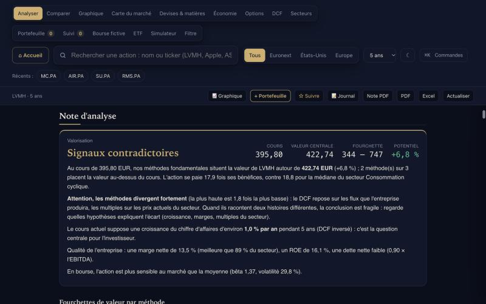
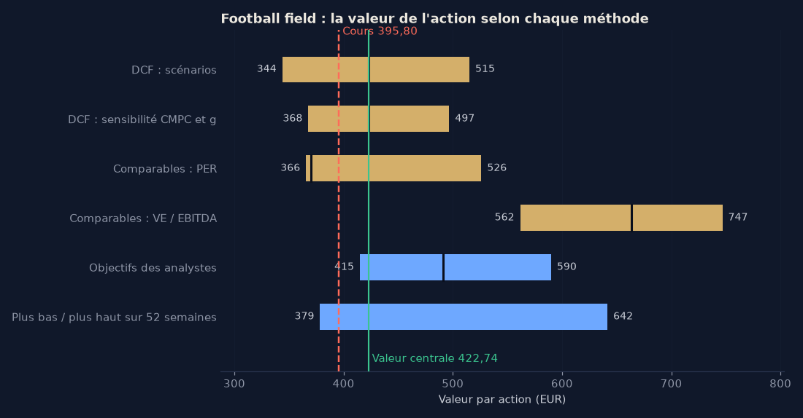
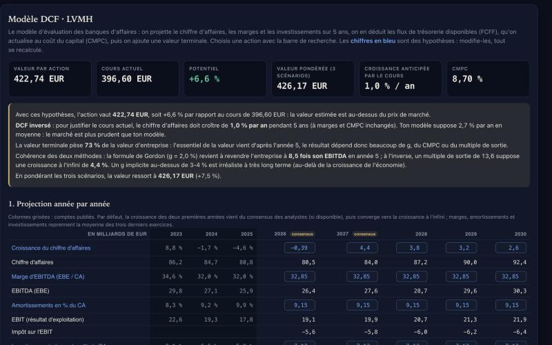
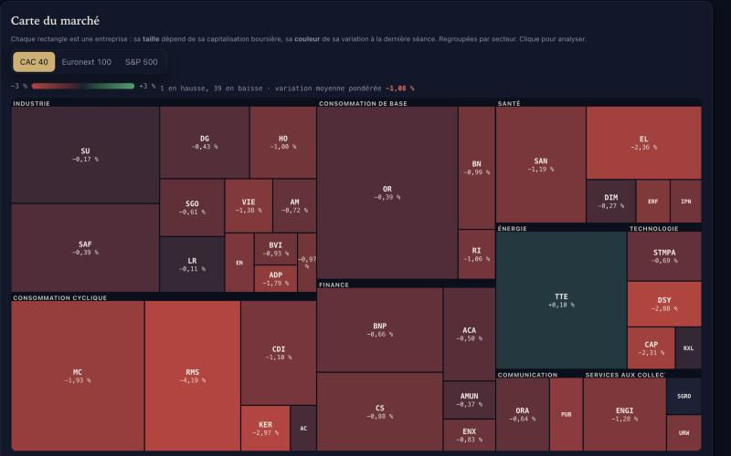
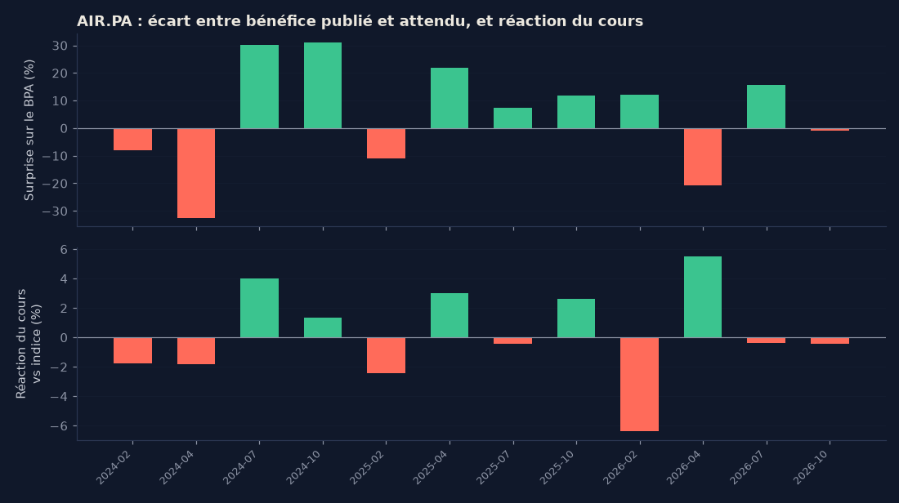
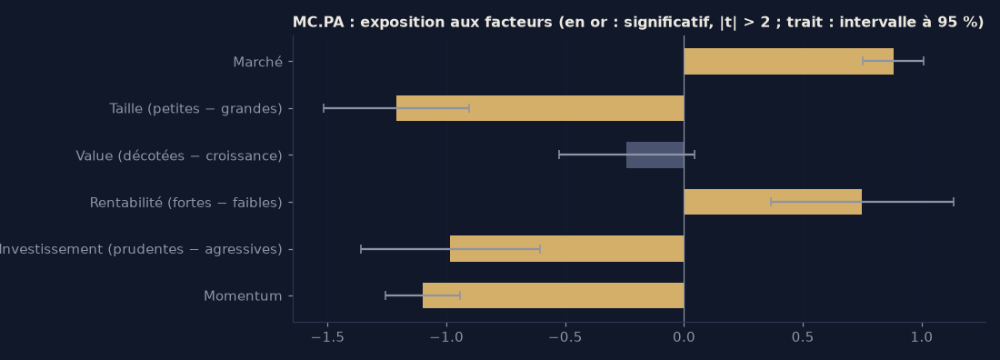
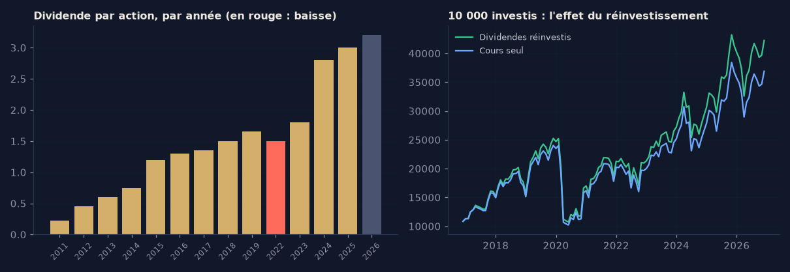
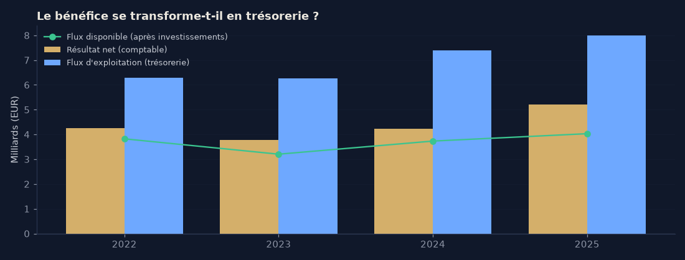

L'analyse boursière des pros, expliquée simplement
Tape le nom d'une entreprise : en quelques secondes, un rapport complet comme ceux des banques d'affaires. Et pour chaque chiffre, ce qu'il veut dire et comment il est calculé.
Pour Mac avec puce Apple (M1 et suivantes) · environ 90 Mo

Tout ce qu'un analyste regarde, au même endroit
Conçue pendant un Master 1 Finance, à partir des méthodes du cours d'analyse financière et des outils des salles de marché. Chaque partie commence par expliquer la notion, puis ce qu'il faut retenir pour l'entreprise.
Note d'analyse
Verdict sur la valorisation, thèse rédigée, catalyseurs, risques et un « football field » qui compare six méthodes de valeur. Exportable en PDF d'une page.
Modèle DCF complet
Projection sur 5 ans, CMPC détaillé, deux valeurs terminales, trois scénarios, DCF inversé et export Excel avec de vraies formules.
Chaque chiffre expliqué
Un clic sur un ratio : sa définition, le calcul avec les chiffres de l'entreprise, les repères et son rang parmi ~1 350 entreprises du secteur.
Analyse financière
SIG, CAF, BFR, effet de levier, ROE et ROIC, scores d'Altman et de Piotroski, qualité des bénéfices (M-score de Beneish).
Marché et risque
Performance, CAPM, modèle Fama-French, VaR testée, analyse technique, Monte Carlo, options (Black-Scholes, arbre binomial).
Résultats publiés
Bénéfice attendu contre publié, réaction du cours, et pourquoi une action peut baisser malgré de bons résultats.
Portefeuille
Frontière de Markowitz, diversification, rééquilibrage, fiscalité française (PEA, flat tax), dividendes mois par mois.
ETF et secteurs
Frais et leur coût sur 20 ans, contenu, éligibilité PEA, comparaison de deux ETF ; tableau de bord de chaque secteur.
Pour s'entraîner
Portefeuilles fictifs, simulateur d'investissement mensuel, liste de suivi avec alertes et journal d'investissement.
Six méthodes, une conclusion argumentée
Le graphique « football field » est celui des banques d'affaires : chaque barre est la fourchette de valeur donnée par une méthode.
- DCF par scénarios et par sensibilité
- Comparables : PER et VE/EBITDA des concurrents
- Objectifs des analystes et cours des 52 dernières semaines
- Un verdict prudent : l'app dit quand les méthodes se contredisent

Le modèle d'une banque d'affaires, modifiable
Toutes les hypothèses sont en bleu : croissance, marges, investissements, coût du capital. Tout se recalcule instantanément.
- DCF inversé : la croissance que suppose le cours actuel
- Deux valeurs terminales et ce que chacune suppose de l'autre
- Export Excel avec de vraies formules, pour un TD ou un dossier

Un tableau de bord de salle de marché
Indices du monde entier, carte du marché, devises, matières premières et cryptos, courbe des taux, calendrier économique.
- ⌘K : une barre de commandes pour tout ouvrir au clavier
- Graphique interactif : bougies, moyennes mobiles, RSI, comparaison
- Thème sombre ou clair

Des graphiques qui racontent quelque chose
Tous produits par l'application, ici pour Airbus et LVMH.




Prête en deux minutes
L'application n'est pas vendue sur l'App Store : macOS demande donc une confirmation au premier lancement.
- Télécharge le fichier
Analyse-Actions.dmgavec le bouton ci-dessous. - Ouvre-le et glisse l'icône Analyse Actions dans le dossier Applications.
- Au premier lancement : clic droit sur l'application → Ouvrir, puis confirme. Sur les versions récentes de macOS, il faut parfois aller dans Réglages Système → Confidentialité et sécurité et cliquer sur Ouvrir quand même.
- C'est tout : tape le nom d'une entreprise (LVMH, Apple, Airbus…) et l'analyse démarre.
Outil pédagogique. Les données viennent de sources publiques gratuites (Yahoo Finance, FRED, BCE, bibliothèque de Kenneth French) et peuvent être inexactes ou retardées. Rien dans cette application ne constitue un conseil en investissement.